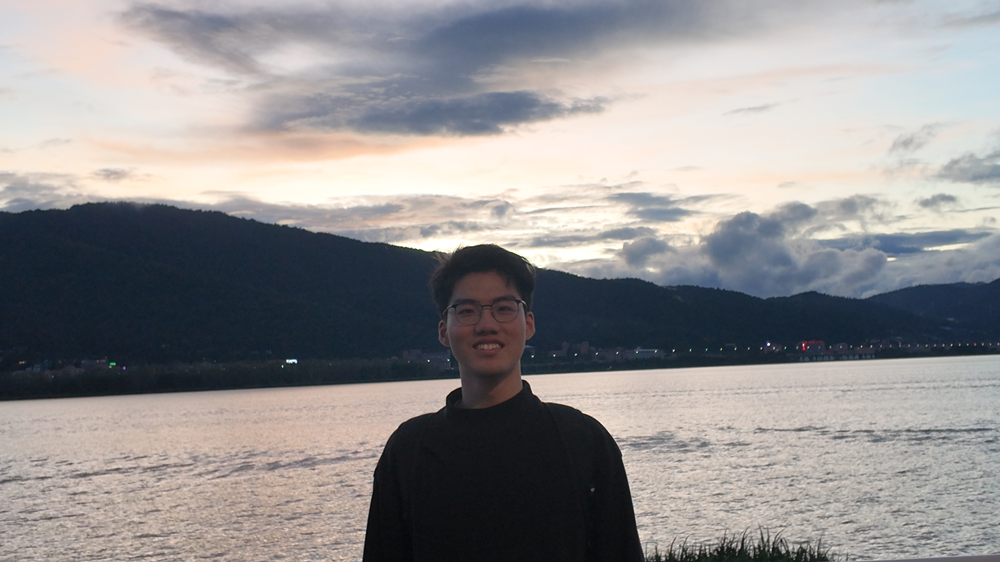

周晓昊 | Xiaohao Zhou
你好，我是重庆大学人工智能专业本科生（2023—2027）。这是我的个人主页，也是一个逐步维护的研究博客。
我的研究大方向是 Agent 和基础模型，目前关注 Terminal Agent、Code Agent、RL/RLVR、ALE/ALE-Bench，以及数据构造、模型训练、benchmark、evaluator、trajectory、harness 和 agent systems。
GitHub / Blog / Research

研究方向先保留结构，后续随着 notes 和 Blog 持续更新。具体论文、项目和结果暂时不写入。
公开文章一条一条列出；点击标题进入独立 Markdown 文章页。
Blog 框架已搭好，暂时没有公开文章。第一篇文章 TBD。
TBD · 后续只添加已经确认、可以公开的论文信息。
TBD · 后续添加可以公开的代码、实验和数据入口。